| Metric | Lean Target |
|---|---|
| Human effort in factory | Half the hours |
| Defects in finished product | Half the defects |
| Engineering effort | One-third the hours |
| Factory space for same output | Half the space |
| In-process inventories | A tenth or less |
5 Lean Manufacturing
5.1 Learning Objectives
By the end of this chapter, you will be able to:
- Define Lean Manufacturing and explain its origins
- Identify and describe the 3 M’s of Lean (Muda, Mura, Muri)
- Recognize and eliminate the seven types of waste
- Apply the 5S methodology to workplace organization
- Understand Just-in-Time (JIT) principles and Kanban systems
- Calculate Takt time and apply line balancing concepts
- Implement setup reduction techniques (SMED)
“Perfection is not attainable. But if we chase perfection, we can catch excellence.” — Vince Lombardi
5.2 Introduction to Lean Manufacturing
Lean Manufacturing is the systematic elimination of waste. The term can be traced to Jim Womack, Daniel Jones, and Daniel Roos’ book The Machine that Changed the World (1991), which examined the Toyota Production System.
What does “Lean” actually mean?
The term “Lean” refers to cutting “fat” from production activities — eliminating anything that doesn’t add value to the customer. Think of it like a lean athlete: no excess weight, maximum efficiency, peak performance.
5.2.1 Definition of Lean
5.3 Evolution of Manufacturing Systems
Manufacturing has evolved through three major paradigms. Understanding this evolution helps us appreciate why Lean emerged as the dominant philosophy.
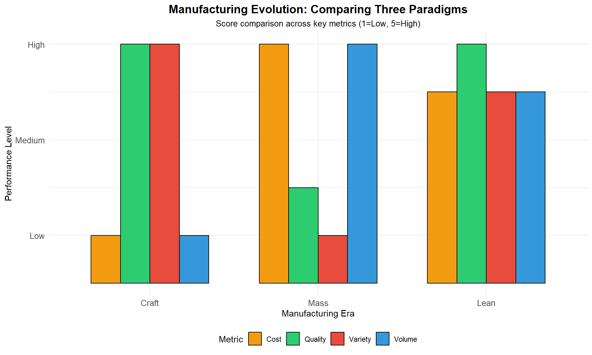
5.3.1 Comparison of Manufacturing Systems
| Characteristic | Craft Manufacturing | Mass Manufacturing | Lean Manufacturing |
|---|---|---|---|
| Time Period | Late 1800s | 1920s (Ford) | 1970s - Present |
| Process | Built on blocks, workers walk around | Assembly line | Cells or flexible lines |
| Workforce | Craftsmen with pride | Low skilled, simplistic jobs | Highly skilled, proud of product |
| Components | Hand-crafted, hand-fitted | Interchangeable parts | Interchangeable, high variety |
| Quality | Excellent | Lower | Excellent (mandatory) |
| Cost | Very expensive | Affordable | Continuously decreasing |
| Volume | Few produced | Billions - identical | High volume, high variety |
| Flexibility | Very high | Very low | High |
Discussion: Why did Mass Manufacturing dominate for so long?
Mass manufacturing dominated because:
- Economies of scale - Higher volume = lower unit cost
- Predictable demand - Post-war boom created stable markets
- Limited competition - Few global competitors
- Consumer acceptance - “Any color as long as it’s black” (Henry Ford)
What changed? - Global competition (especially from Japan) - Customers demanded variety and quality - Product lifecycles shortened - Technology enabled flexibility
5.4 The Toyota Production System (TPS)
The most influential lean manufacturing model is the Toyota Production System (TPS), developed by Taiichi Ohno and Shigeo Shingo at Toyota.
5.4.1 Historical Context
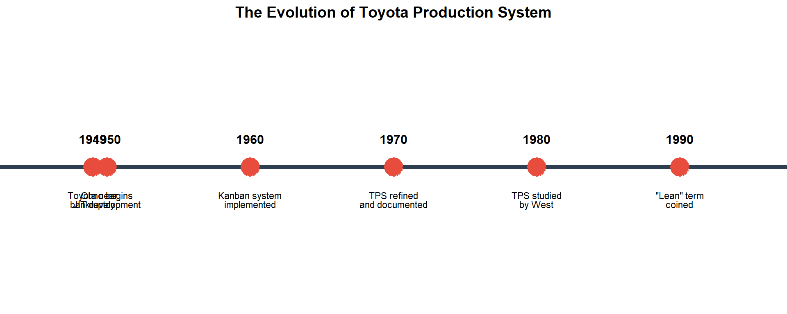
In 1949, Toyota was on the brink of bankruptcy. Ford’s car production was at least 8 times more efficient than Toyota’s.
Kiichiro Toyoda’s Challenge: “To achieve the same rate of production as the United States in three years.”
Taiichi Ohno accepted this challenge. Inspired by American supermarkets, he developed the Just-in-Time method.
5.4.2 Two Pillars of TPS
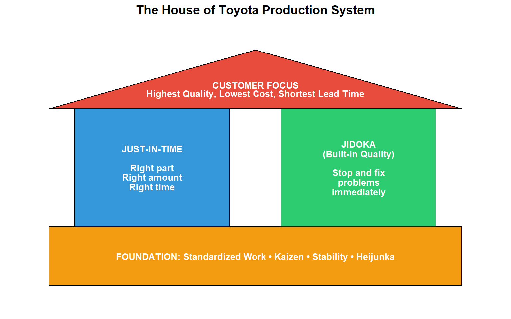
1. Just-in-Time (JIT): Produce only what is needed, when it is needed, in the amount needed.
2. Jidoka (Built-in Quality): Automation with a human touch — stop production immediately when a defect is detected.
5.5 The 3 M’s of Lean
Lean manufacturing focuses on eliminating three types of inefficiency, known as the 3 M’s:
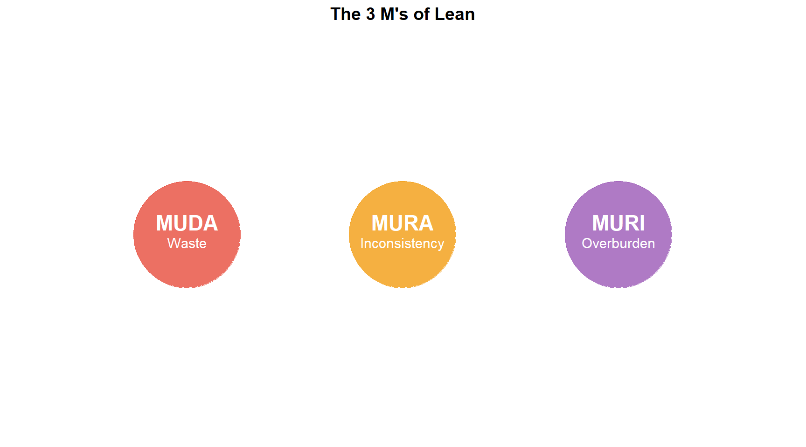
| Japanese | English | Description | Example |
|---|---|---|---|
| **Muda** (無駄) |W | ste |A | tivities that consume resources without adding value |E | cess inventory, waiting, defects | |
| **Mura** (斑) | | nconsistency/Unevenness | | ariation and lack of uniformity in processes | | neven production schedules, variable quality | |
| **Muri** (無理) |O | erburden/Unreasonableness |O | erburdening people or equipment beyond capacity |U | realistic deadlines, overworked employees | |
5.6 The Seven Types of Waste (MUDA)
Shigeo Shingo identified seven categories of waste common to manufacturing. These are activities that add cost without adding value.
“Waste is everything that is not absolutely essential.” — Hiroyuki Hirano
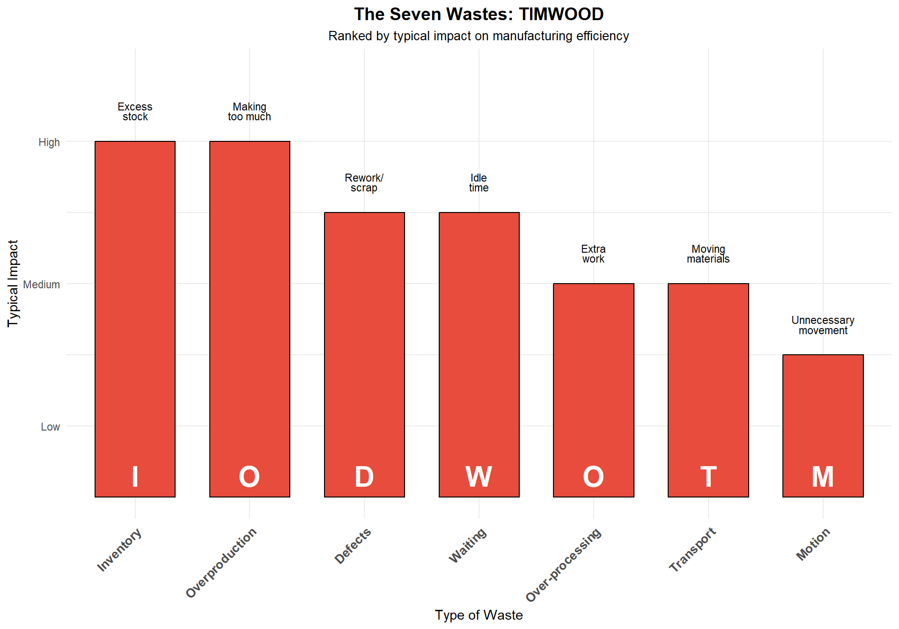
5.6.1 Detailed Breakdown of the Seven Wastes
| # | Waste Type | Description | Examples | Solution |
|---|---|---|---|---|
| 1 | **Overproduction** | Producing more than needed, earlier than needed | Building to forecast, large batch sizes | Pull systems, smaller batches |
| 2 | **Inventory** | Excess raw materials, WIP, or finished goods | Safety stock, buffer inventory, obsolete stock | JIT delivery, kanban systems |
| 3 | **Waiting** | Idle time waiting for materials, information, or equipment | Machine downtime, waiting for approvals | TPM, better scheduling |
| 4 | **Transportation** | Unnecessary movement of materials between processes | Long distances between operations, poor layout | Cellular layout, co-location |
| 5 | **Over-processing** | Doing more work than the customer requires | Tighter tolerances than needed, redundant inspections | Value engineering, standardization |
| 6 | **Motion** | Unnecessary movement of people | Reaching, bending, walking to get tools | 5S, ergonomic workstations |
| 7 | **Defects** | Products that don't meet specifications | Scrap, rework, warranty claims | Poka-yoke, root cause analysis |
Memory Aid: TIMWOOD
Use TIMWOOD to remember the seven wastes:
- Transportation
- Inventory
- Motion
- Waiting
- Overproduction
- Over-processing
- Defects
Some people also use DOWNTIME (adding “Non-utilized talent” as an 8th waste).
Interactive Exercise: Identify the Waste
Scenario 1: A worker walks 50 feet to get a tool, uses it for 30 seconds, then walks back.
Answer: This is Motion waste. The solution would be to place tools at the point of use (5S).
Scenario 2: A machine produces 1000 parts, but only 800 are needed this week.
Answer: This is Overproduction waste. The solution would be to implement pull production based on actual demand.
Scenario 3: Parts sit in a queue for 3 days before being processed at the next station.
Answer: This is both Inventory and Waiting waste. The solution would be to balance the line and implement one-piece flow.
5.7 The 5S Methodology
5S is a workplace organization methodology that creates a clean, efficient, and safe working environment.
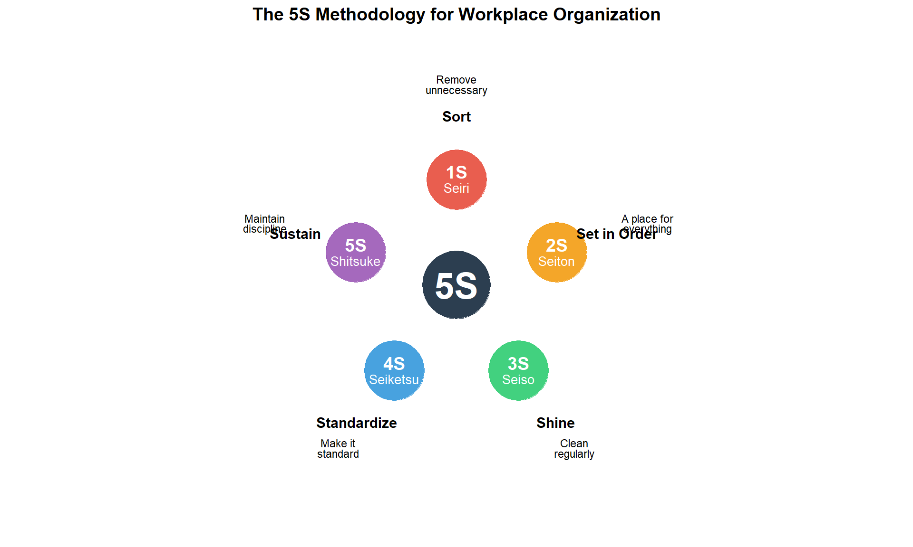
| Step | Japanese | English | Action | Key Question |
|---|---|---|---|---|
| 1S | **Seiri** | Sort | Remove unnecessary items from the workplace | Do we need this? |
| 2S | **Seiton** | Set in Order | Organize items so they are easy to find and use | Where does this belong? |
| 3S | **Seiso** | Shine | Clean the workplace regularly | Is everything clean? |
| 4S | **Seiketsu** | Standardize | Create standards for maintaining 1S-3S | How do we keep it this way? |
| 5S | **Shitsuke** | Sustain | Build discipline to maintain standards | Are we following our standards? |
5.7.1 Visual Factory
“The ability to understand the status of a production area in 5 minutes or less by simple observation without use of computers or speaking to anyone.”
A well-implemented 5S creates a visual factory where problems are immediately apparent.
5.8 Just-in-Time (JIT) Production
5.8.1 The JIT Philosophy
“Deliver the right material, in the exact quantity, with perfect quality, in the right place, just before it is needed.” — Ohno and Shingo
Warning: Using `size` aesthetic for lines was deprecated in ggplot2 3.4.0.
ℹ Please use `linewidth` instead.Warning in geom_segment(aes(x = 5.4, xend = 5.9, y = 1, yend = 1), arrow = arrow(length = unit(0.3, : All aesthetics have length 1, but the data has 5 rows.
ℹ Please consider using `annotate()` or provide this layer with data containing
a single row.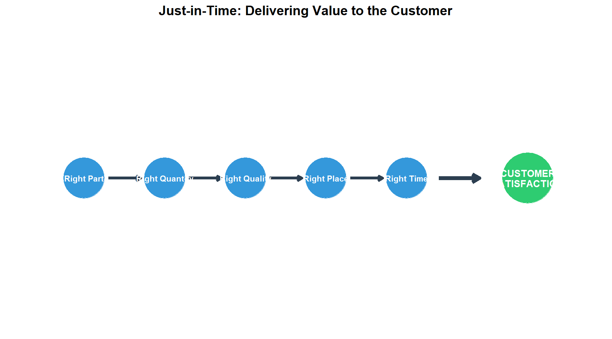
5.8.2 Push vs. Pull Systems
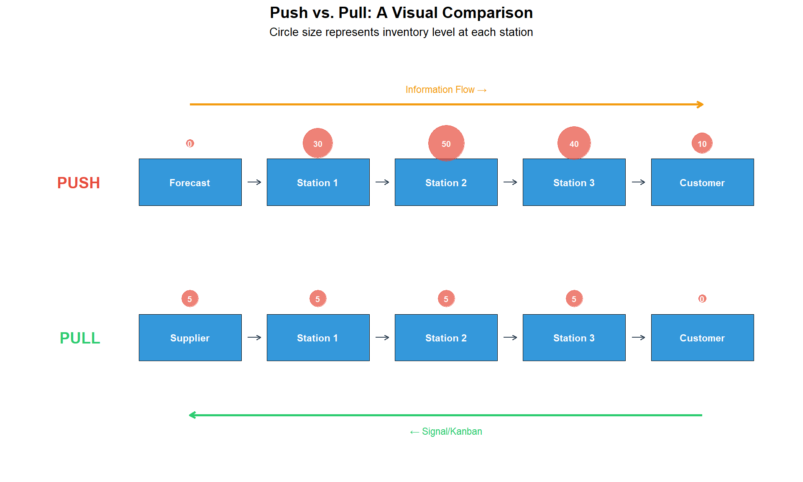
| Aspect | Push System | Pull System |
|---|---|---|
| Production trigger | Forecast/Schedule | Actual demand/Kanban signal |
| Information flow | Forward (upstream to downstream) | Backward (downstream to upstream) |
| Inventory levels | High (buffers at each station) | Low (minimal buffers) |
| Flexibility | Low | High |
| Problem visibility | Problems hidden by inventory | Problems immediately visible |
| Customer responsiveness | Slow | Fast |
5.8.3 Kanban System
Kanban (看板) is Japanese for “signboard” or “billboard.” It’s a scheduling system for lean and JIT production.
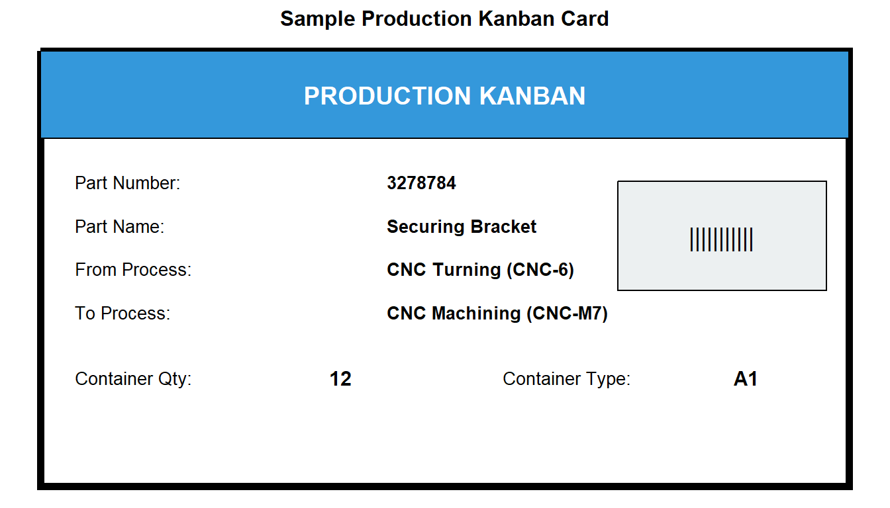
5.9 Key Time Metrics
Understanding time metrics is essential for lean manufacturing analysis and improvement.
5.9.1 Definitions
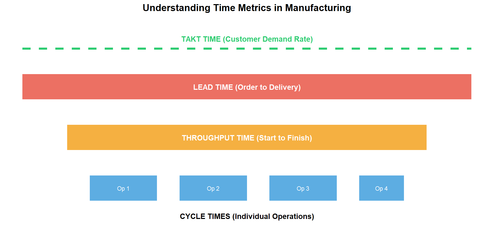
5.9.2 Formulas and Calculations
Takt Time — The pace of production to meet customer demand:
\[\text{Takt Time} = \frac{\text{Available Production Time}}{\text{Customer Demand}}\]
Cycle Time — Time to complete one unit at a workstation:
\[\text{Cycle Time} = \frac{\text{Net Operating Time}}{\text{Units Produced}}\]
Throughput Time — Total time from start to finish:
\[\text{Throughput Time} = \text{Processing} + \text{Inspection} + \text{Queue} + \text{Move Time}\]
5.9.3 Interactive Example: Calculating Takt Time
# Given data
available_time_per_day <- 8 * 60 # 8 hours = 480 minutes
breaks_and_meetings <- 60 # 60 minutes for breaks/meetings
customer_demand <- 240 # 240 units per day
# Calculate net available time
net_available_time <- available_time_per_day - breaks_and_meetings
cat("Net Available Time:", net_available_time, "minutes/day\n")Net Available Time: 420 minutes/day# Calculate Takt Time
takt_time <- net_available_time / customer_demand
cat("Takt Time:", takt_time, "minutes per unit\n")Takt Time: 1.75 minutes per unitcat("Takt Time:", takt_time * 60, "seconds per unit\n")Takt Time: 105 seconds per unit# Interpretation
cat("\n--- Interpretation ---\n")
--- Interpretation ---cat("To meet customer demand, we must produce 1 unit every",
takt_time, "minutes (", takt_time * 60, "seconds).\n")To meet customer demand, we must produce 1 unit every 1.75 minutes ( 105 seconds).Practice Problem: Calculate Your Takt Time
Given: - Shift length: 10 hours - Two 15-minute breaks and one 30-minute lunch - Customer requires 300 units per shift
Calculate: 1. Net available production time 2. Takt time in minutes 3. Takt time in seconds
Solution:
Net time = (10 × 60) - (15 + 15 + 30) = 600 - 60 = 540 minutes
Takt time = 540 / 300 = 1.8 minutes = 108 seconds per unit5.10 Setup Reduction (SMED)
SMED (Single Minute Exchange of Dies) is a methodology developed by Shigeo Shingo to dramatically reduce changeover time.
5.10.1 The SMED Concept
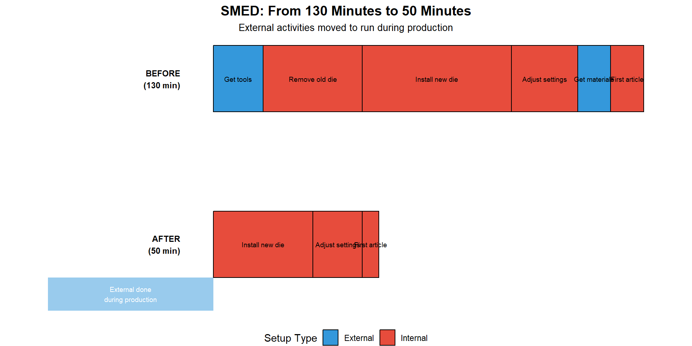
5.10.2 SMED Methodology
| Step | Action | Description | Example |
|---|---|---|---|
| 1 | **Document current process** | Video the entire changeover, identify all steps | Time each step of die change |
| 2 | **Separate internal and external** | Internal = machine must be stopped; External = can be done while running | Getting tools = external; Removing die = internal |
| 3 | **Convert internal to external** | Find ways to perform 'internal' tasks while machine is running | Pre-stage next die, pre-heat tools |
| 4 | **Streamline all operations** | Reduce time for remaining internal tasks through better methods | Use quick-release clamps instead of bolts |
Case Study: Press Setup Reduction
Problem: Presses were idle more than 50% of the time due to setup. - Average production run: 1-2 days - Setup time: 1-2 days
Root Cause Analysis: - Using standard bolt fasteners with open-end wrenches - No pre-staging of tools or dies - Sequential operations that could be parallel
Solutions Implemented:
| Change | Time Saved |
|---|---|
| Socket sets + power tools | 10% |
| Quick-release clamps | 50% |
| Pre-staging materials | 20% |
| Parallel operations | 20% |
Result: Setup time reduced from 1-2 days to 4-6 hours, with a target of under 1 hour.
5.11 Kaizen: Continuous Improvement
Kaizen (改善) means “change for the better” — the philosophy of continuous, incremental improvement.
5.11.1 Kaizen Principles
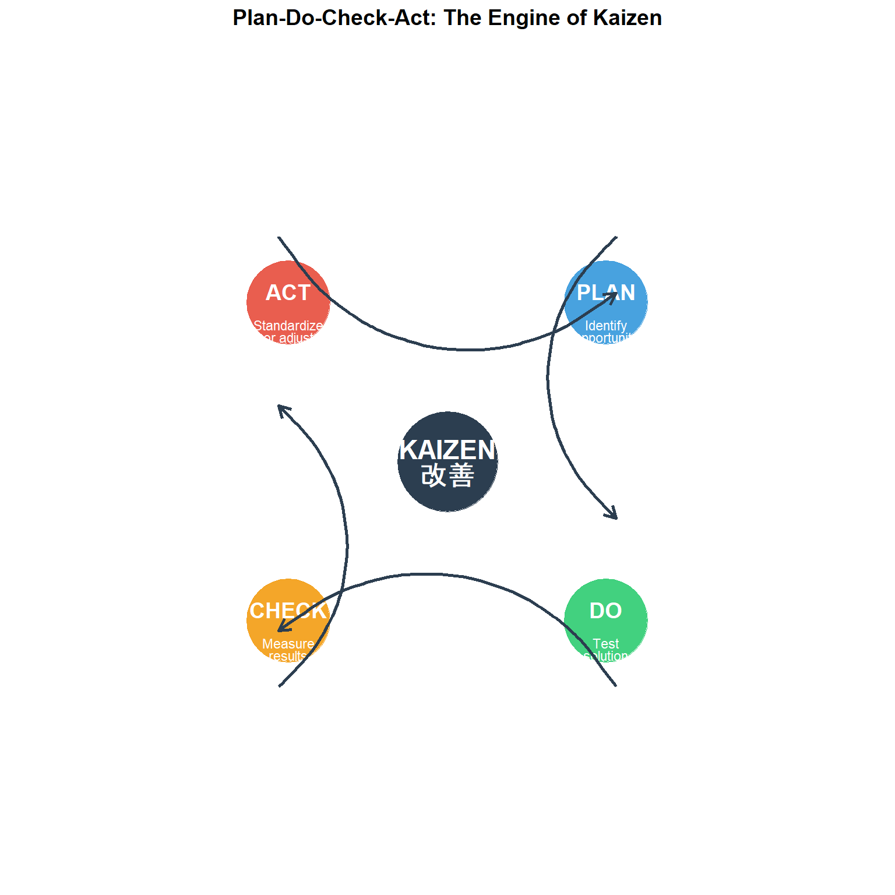
5.11.2 Key Kaizen Concepts
- Everyone participates — from CEO to frontline workers
- Small, incremental changes — not major overhauls
- Focus on process — blame the process, not the person
- Data-driven decisions — measure before and after
- Standardize improvements — lock in gains
5.12 Value Stream Mapping (VSM)
Value Stream Mapping is a lean tool for analyzing the flow of materials and information required to bring a product to the customer.
5.12.1 VSM Symbols
| Metric | Description | Typical Location |
|---|---|---|
| **Process Time (PT)** | Time to actually process one unit | In process box |
| **Lead Time (LT)** | Total time from raw material to finished good | Timeline at bottom |
| **Changeover Time (C/O)** | Time to switch between products | In process box |
| **Uptime** | Percentage of time equipment is available | In process box |
| **Takt Time** | Required pace to meet demand | Noted on map |
| **WIP Inventory** | Units waiting between processes | Triangle symbol between processes |
5.13 Summary
| Concept | Definition | Key Benefit |
|---|---|---|
| **Lean Manufacturing** | Systematic elimination of waste | Reduced cost, improved quality |
| **3 M's** | Muda (waste), Mura (inconsistency), Muri (overburden) | Framework for identifying improvement opportunities |
| **7 Wastes** | TIMWOOD: Transport, Inventory, Motion, Waiting, Overproduction, Over-processing, Defects | Systematic waste identification |
| **5S** | Sort, Set in Order, Shine, Standardize, Sustain | Organized, efficient workplace |
| **JIT** | Right part, right quantity, right quality, right place, right time | Minimal inventory, fast response |
| **Kanban** | Visual signal system for pull production | Controlled WIP, smooth flow |
| **SMED** | Single Minute Exchange of Dies - rapid changeover | Flexibility, reduced batch sizes |
| **Kaizen** | Continuous incremental improvement | Engaged workforce, sustained improvement |
5.14 Review Questions
Question 1: What are the seven types of waste, and which is often considered the most impactful?
The seven types of waste (TIMWOOD) are: 1. Transportation 2. Inventory 3. Motion 4. Waiting 5. Overproduction 6. Over-processing 7. Defects
Inventory is often considered the most impactful because it hides other problems, ties up capital, and can become obsolete.
Question 2: Explain the difference between Push and Pull production systems.
Push System: - Production based on forecasts - Materials pushed through the system - Results in high inventory - Problems hidden by buffer stock
Pull System: - Production triggered by actual demand - Materials pulled by downstream operations - Minimal inventory - Problems immediately visible
Question 3: Calculate the Takt time for a facility with 450 minutes of available time and demand of 150 units.
\[\text{Takt Time} = \frac{450 \text{ minutes}}{150 \text{ units}} = 3 \text{ minutes per unit}\]
This means we need to produce one unit every 3 minutes (180 seconds) to meet customer demand.
Question 4: What is the difference between internal and external setup in SMED?
Internal Setup: Activities that can ONLY be performed when the machine is stopped (e.g., physically removing the old die).
External Setup: Activities that CAN be performed while the machine is still running (e.g., getting tools, pre-staging the next die, preparing materials).
The key to SMED is converting as many internal activities to external as possible.
5.15 References
- Womack, J., Jones, D., & Roos, D. (1990). The Machine that Changed the World.
- Ohno, T. (1988). Toyota Production System: Beyond Large-Scale Production.
- Shingo, S. (1985). A Revolution in Manufacturing: The SMED System.
- Liker, J. (2004). The Toyota Way.
- Wang, H.P., Chang, T.C., & Wysk, R.A. (2007). Computer Aided Manufacturing, Chapter 18.